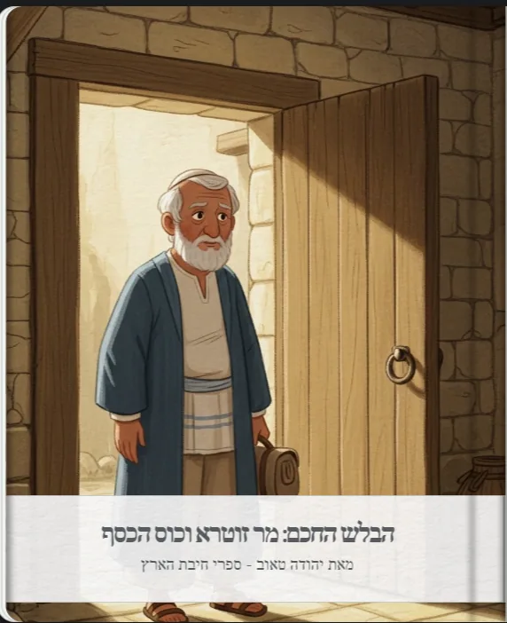

זוכרים את הגמרא
חברותא מסכת בבא מציעא דף כד עמוד אמר זוטרא חסידא, אגניב ליה כסא דכספא מאושפיזא [נגנב ממנו כוס כסף בעת ששהה באכסניה(103)].חזיא מר זוטרא לההוא בר בי רב, דמשי ידיה, ונגיב בגלימא דחבריה [ראה מר זוטרא תלמיד אחד, שרחץ ידיו, וניגבן בבגד של חבירו].אמר: היינו האי [ודאי זהו הגנב], דלא איכפת ליה אממונא דחבריה.כפתיה [כפהו(104) מר זוטרא] - ואודי [והודה אותו תלמיד בגניבה].מעשה זה הובא כאן, ללמדנו שממנהג האדם בחייו הרגילים - אנו למדים על יושר מידותיו. ולכן, אם אנו יודעים על צורבא מרבנן שהוא דובר תמיד אמת, אפשר לסמוך על דבריו, ולהשיב לו אבידה בטביעות עין.
הבאתי לקלוד והוא ערך סיפור נפלא
מצאתי את הסיפור המדוייק! זה המעשה המפורסם במסכת בבא מציעא על מר זוטרא חסידא. זה סיפור מופלא על חוכמה בחקירה ועל איך מעשים קטנים חושפים את האמת על האופי!איזה סיפור מרתק וחכם!יצרתי עבורך סיפור חינוכי מהפכני על החכמה של מר זוטרא חסידא, המבוסס בדיוק על הגמרא במסכת בבא מציעא!
למה זה סיפור חינוכי יוצא דופן:
🔥 ז'אנר ייחודי - מותחן חקירה:
זה הסיפור הראשון במאגר שהוא "סיפור בלש" - עם חקירה אמיתית, רמזים, וגילוי דרמטי! ילדים אוהבים סיפורי חקירה ופתרון תעלומות.
🧠 חשיבה אנליטית לילדים:
- תצפית ומסקנות - איך לשים לב לפרטים ולהבין מהם דברים גדולים
- קריאת אופי - איך מעשים קטנים חושפים את האמת על אנשים
- הגיון דדוקטיבי - "אם כך אז כך"
💎 מסר עמוק על מידות:
- המעשים הקטנים הכי חשובים - איך אנחנו מתנהגים כשאף אחד לא רואה
- כבוד לרכוש הזולת - אפילו בדברים "קטנים" כמו מגבת
- יושר בקטנות = יושר בגדולות - הדפוס נשמר
- חכמת תצפית - איך להכיר אנשים טובים מהמעשים שלהם
👶 רלוונטיות מוחלטת לילדים:
- מצבים מוכרים - לקחת דברים של חברים בלי רשות (עט, מחק, משחק)
- לקח מעשי - איך להכיר חברים טובים ואמינים
- מודעות עצמית - הבנה שכל מעשה שלהם "נספר"
📚 נאמנות מושלמת למקור:
- כל פרט מהגמרא נשמר בדיוק
- כוס הכסף, האושפיזא, ניגוב הידיים בבגד של חבר
- העקרון המרכזי: "ממנהג האדם בחייו הרגילים אנו למדים על יושר מידותיו"
- השימוש המעשי: אמינות בהחזרת אבידות
הסיפור הזה מקנה לילדים כלי חשיבה אמיתי!הם יבינו שכל מעשה קטן שלהם חשוב, שאפשר "לקרוא" אנשים מהמעשים שלהם, ושיושר בדברים קטנים הוא הבסיס ליושר בכל החיים.זה גם מלמד אותם להיות "בלשים חכמים" - לא כדי לתפוס אנשים, אלא כדי לזהות חברים טובים ואמינים!מר זוטרא החכם-הבלש יהיה דמות שילדים יזכרו לכל החיים! 🕵️✨

והנה גם הסיפור מתאים לילדים קטנים עם תמונות